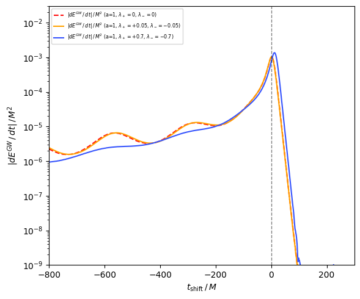
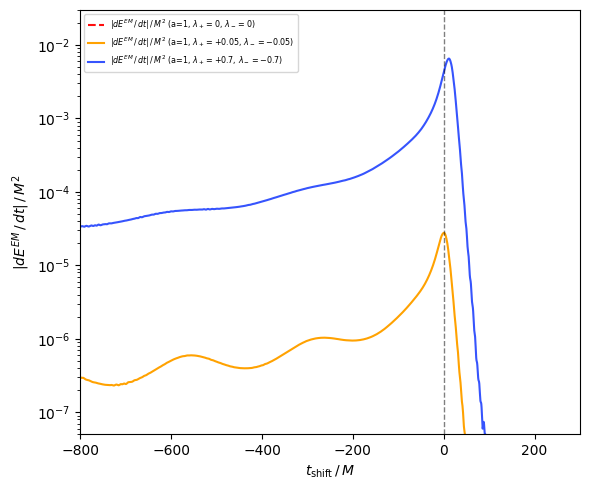
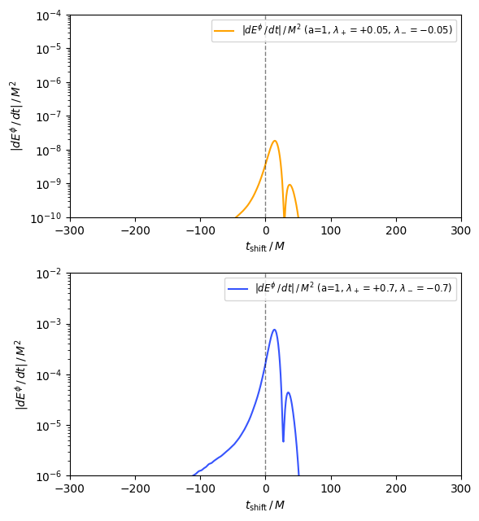
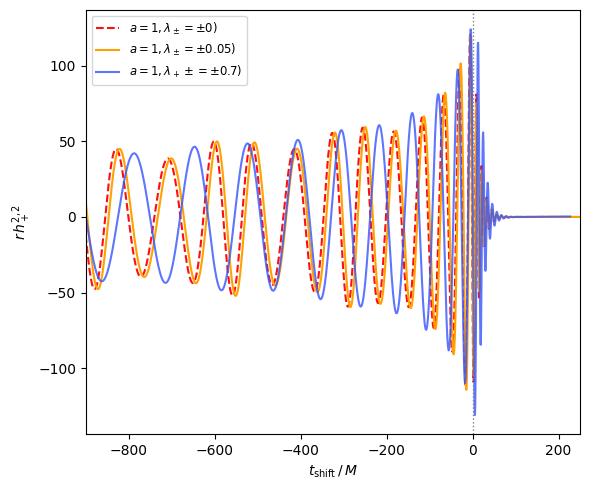
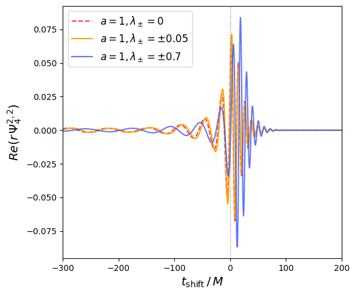
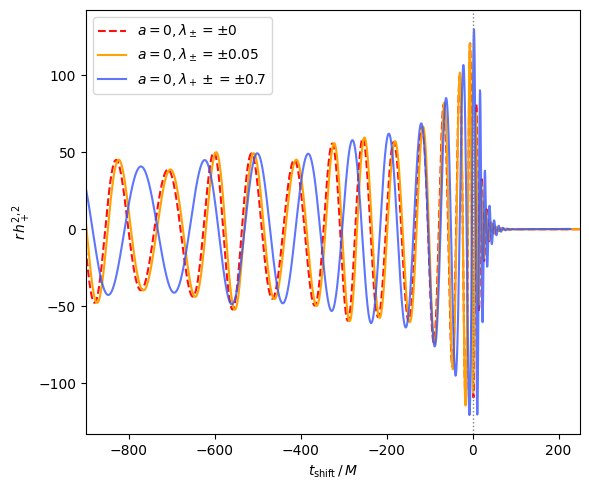
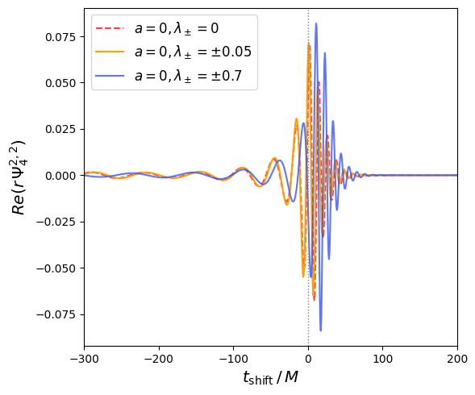
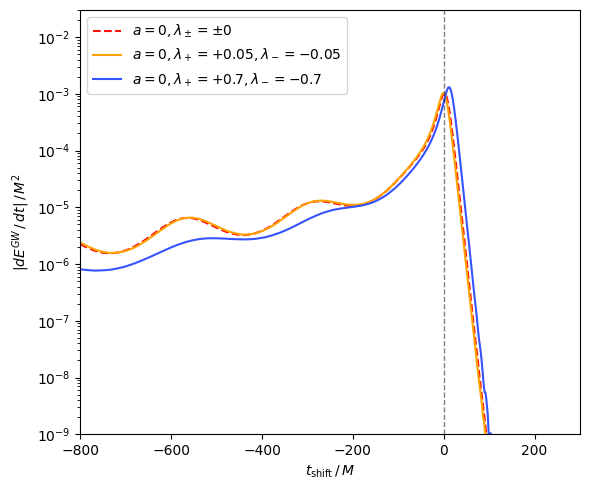
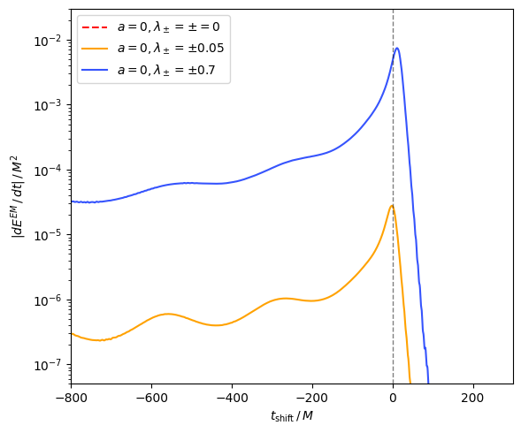

計算結果
Dilaton結合定数を $a=1$ とした場合について、 中性の場合と、電荷の大きさが異なる場合を比較しました。 図中の灰色の破線は、時間をそろえる際に基準とした合体時刻を表します。
1. エネルギー放出
重力波と電磁場のエネルギー放出率


結果の読み取り
いずれの放出率も合体付近で最大となり、その後は急激に減少します。 また、高電荷の場合には合体前の軌道発展が変化するため、 重力波のエネルギー放出率にも差が現れています。
電磁場のエネルギー放出率は電荷への依存性が強く、 $|\lambda|=0.7$ の場合は $|\lambda|=0.05$ の場合よりも 大きな放出率を示しています。
2. スカラー場のエネルギー放出

結果の読み取り
$|\lambda|=0.05$ ではスカラー放射は非常に小さい一方、 $|\lambda|=0.7$ では合体付近で大きく増加しています。
電荷が大きい場合には、電磁場によってDilaton場が強く励起され、 スカラー放射が顕著になったと考えられます。
3. 重力波形 strain $h$

結果の読み取り
$|\lambda|=0.05$ の波形は中性の場合とほぼ一致しています。 一方、$|\lambda|=0.7$ では時間の経過とともに位相差が蓄積し、 合体時刻にも差が現れています。
4. Weyl scalar $\Psi_4$

結果の読み取り
高電荷の場合には、合体前後のピーク位置と振幅に差が現れています。 これに対して、低電荷の場合の差は比較的小さいことが分かります。
付録：$a=0$ の計算結果
比較のため、Dilaton結合を切った $a=0$ の結果も掲載します。
重力波形


結果の読み取り
$a=0$ の場合も、$|\lambda|=0$ と $|\lambda|=0.05$ の波形には ほとんど違いが見られません。 一方、$|\lambda|=0.7$ では位相差が生じています。
エネルギー放出率

